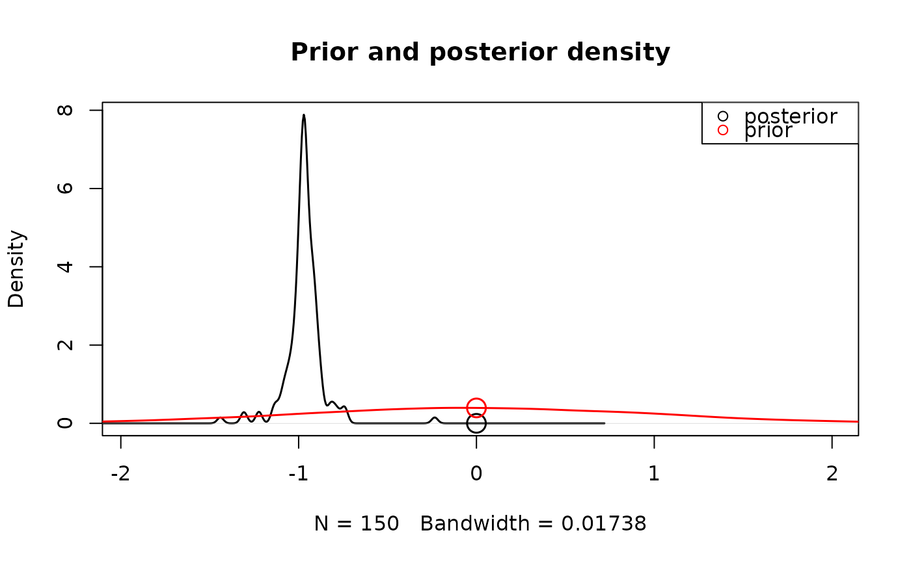
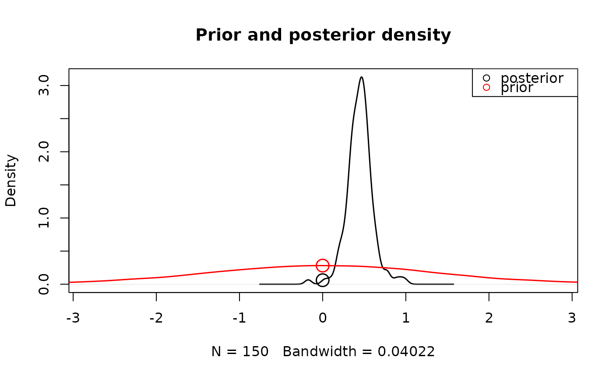

Approximates the Bayes factor for parameter effects using the savage-dickey ratio.
Usage
# S3 method for class 'emc'
hypothesis(
emc,
parameter = NULL,
H0 = 0,
fun = NULL,
selection = "mu",
do_plot = TRUE,
use_prior_lim = TRUE,
N = 10000,
prior_args = list(),
...
)
hypothesis(emc, ...)Arguments
- emc
An emc object
- parameter
A string. A parameter which you want to compare to H0. Will not be used if a FUN is specified.
- H0
An integer. The H0 value which you want to compare to
- fun
A function. Specifies an operation to be performed on the sampled or mapped parameters.
- selection
A Character string. Indicates which parameter type to use (e.g.,
alpha,mu,sigma2,correlation).- do_plot
Boolean. If
FALSEwill omit the prior-posterior plot and only return the savage-dickey ratio.- use_prior_lim
Boolean. If
TRUEwill use xlimits based on prior density, otherwise based on posterior density.- N
Integer. How many prior samples to draw
- prior_args
A list. Optional additional arguments to be passed to plot.default for the plotting of the prior density (see
par())- ...
Optional arguments that can be passed to
get_pars,density, orplot.default(seepar())
Details
Note this is different to the computation of the marginal deviance in compare
since it only considers the group level effect and not the whole model (i.e. subject-level parameters).
For details see: Wagenmakers, Lodewyckx, Kuriyal, & Grasman (2010).
Examples
# Here the emc object has an effect parameter (e.g. m),
# that maps onto a certain hypothesis.
# The hypothesis here is that m is different from zero.
# We can test whether there's a group-level effect on m:
hypothesis(samples_LNR, parameter = "m")

#> [1] Inf
# Alternatively we can also test whether two parameters differ from each other
mdiff <- function(p)diff(p[c("m","m_lMd")])
hypothesis(samples_LNR,fun=mdiff)

#> [1] 4.625103